0. はじめに
モジュラーシンセの世界に、ギターペダルのように直感的に使えるサンプリングルーパーがないのが、個人的に長らくの不満でした。
また、あったとしても、少ないトラック数であったり、SDカードへの保存ができなかったり、結局私の理想をかなえるものはありませんでした。
本機は開発者である私自身の理想のサンプリングルーパーとして設計されています。
あなたにとってもそうであれば、これほど喜ばしいことはありません。
1. 概要
LilaC Repeater は4トラックのステレオサンプリングルーパーです。
各トラックは独立した録音長と再生速度、再生方向を持ち、同期再生が可能です。
録音内容はSDカードに自動保存され、いつでもループセットとして読み出すことができます。
外部クロックとして、クロックパルス入力とMIDIクロック入力(別売のMIDI CoM+利用時)に対応し、録音後も常に外部クロックに同期して再生速度を可変できます。
さらに、再生速度を変えた状態でのオーバーダブも可能です。
再生速度を変えながら録音を重ねていくことで、ただのループではない、より実験的なパフォーマンスが可能です。
また、再生位置と外部/内部クロックの位相はPLL制御によって常に同期されるので、長時間ループを再生してもサンプルとクロックの位相がズレることがありません。
ハードウェア仕様:
- オーディオ
- 96kHz/24bit ステレオ入出力 (内部処理: 96kHz/32bit float, サンプル保存: 48kHz/32bit float)
- 入出力レイテンシ 1ms 未満
- ディスプレイ
- White OLED 128x64
- 入出力
- ステレオ入力
- ステレオ出力
- クロック入力
- リセット入力
- 録音トリガー入力
- クロック出力
- MIDI拡張端子/UARTチェイン端子
機能一覧:
- 4ステレオトラック同時再生
- トラック個別の再生方向、再生速度、パンニング、再生ウィンドウ(ループ範囲)設定
- クロック同期録音/再生
- 可変速度オーバーダビング
- オートストップ録音
- オーバーダブレベル設定(FDBK)
- Dry(入力音)と各トラックのレベルフェーダ
- 録音サンプルの一段階Undo/Redo
- SDカードへの自動保存
- 最大128個のループセット管理
2. ハードウェア
2-1. フロント
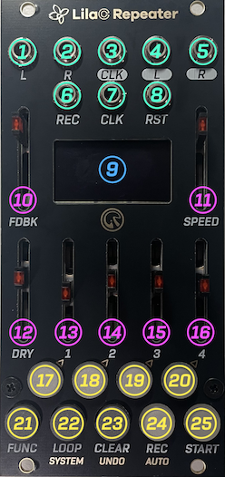
| 番号 | 名前 | 説明 |
|---|---|---|
| 1 | L入力 | オーディオのL ch入力。 |
| 2 | R入力 | オーディオのR ch入力。未接続時はL ch入力が内部結線。 |
| 3 | CLK出力 | 同期クロックパルス出力(0/5V)。 |
| 4 | L出力 | オーディオのL ch出力。 |
| 5 | R出力 | オーディオのR ch出力。 |
| 6 | REC入力 | 録音トリガー入力。トリガーパルス入力時、録音および録音終了をトリガーする。 |
| 7 | CLK入力 | 同期クロックパルス入力。 |
| 8 | RST入力 | 再生位置のリセットパルス入力。 |
| 9 | OLEDディスプレイ | 128x64の白OLEDディスプレイ。各種情報表示を行う。 |
| 10 | FDBKフェーダ | オーバーダブ時の過去録音サンプルのミックス率を設定する。 |
| 11 | SPEEDフェーダ | 再生スピードを60-240BPMの間で設定する。外部同期時は無効化。 |
| 12 | DRYフェーダ | 入力オーディオ兼録音入力のレベルを設定する。 |
| 13 | T1フェーダ | トラック1の再生レベルを設定する。 |
| 14 | T2フェーダ | トラック2の再生レベルを設定する。 |
| 15 | T3フェーダ | トラック3の再生レベルを設定する。 |
| 16 | T4フェーダ | トラック4の再生レベルを設定する。 |
| 17 | T1ボタン | トラック1の録音ターゲット指定や、モードごとの操作を行う。 |
| 18 | T2ボタン | トラック2の録音ターゲット指定や、モードごとの操作を行う。 |
| 19 | T3ボタン | トラック3の録音ターゲット指定や、モードごとの操作を行う。 |
| 20 | T4ボタン | トラック4の録音ターゲット指定や、モードごとの操作を行う。 |
| 21 | FUNCボタン | 他のボタンと組み合わせてサブ機能を実行する。ダブルタップで通常モード復帰。 |
| 22 | LOOPボタン | ループセット選択画面に遷移する。 |
| 23 | CLEARボタン | 他のボタンと組み合わせてトラック個別やループセット全体のクリア操作を行う。 |
| 24 | RECボタン | 録音/オーバーダブの開始/停止。 |
| 25 | STARTボタン | 全トラック再生開始/停止。 |
2-2. バック
! 注意: 電源および拡張コネクタの極性に注意してください。ケーブルの赤いラインとシルクスクリーンの白い線の方向を一致させてください。極性を間違えると故障の原因になります。
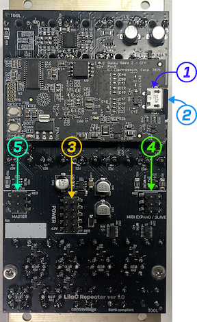
| 番号 | 名前 | 説明 |
|---|---|---|
| 1 | USBコネクタ(on Daisy Seed DFM2) | ファームウェアアップデートに利用できるUSBコネクタ。 |
| 2 | マイクロSDカードスロット | ファームウェアアップデートやサンプルインポート、ループセット保存に使うSDカード用スロット。出荷時はSDカードを挿入済み。 |
| 3 | 電源コネクタ | 10pinの電源コネクタ。白いシルクの方向とケーブルの赤いラインの方向を合わせる。 |
| 4 | MIDI EXPAND/SLAVEコネクタ | 6pinのコネクタ。MIDI拡張モジュールの接続、またはUARTチェインの入力(上流からの受信)に使う。白いシルクの方向とケーブルの赤いラインの方向を合わせる。 |
| 5 | MASTERコネクタ | 6pinのコネクタ。UARTチェインの出力(下流への送信)に使う。白いシルクの方向とケーブルの赤いラインの方向を合わせる。 |
3. クイックスタート
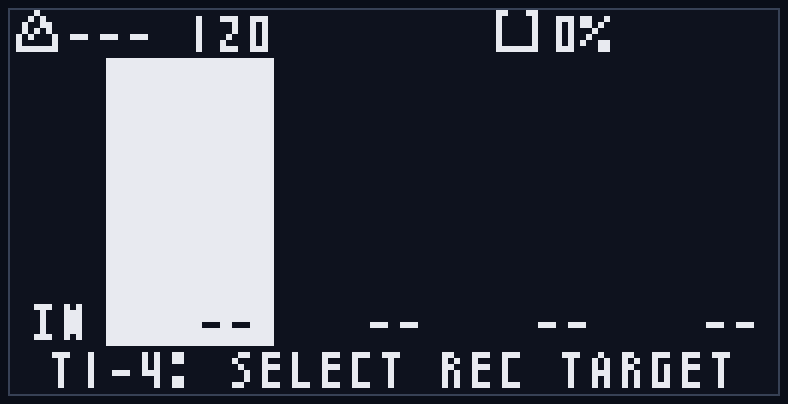
起動直後は通常モードになっています。
T1ボタンが赤く点灯し、通常モード画面のトラック1が反転表示されていることを確認してください。
L/R入力に音の出るモジュールの出力を繋いで、画面の左端のINの文字の上にレベルバーが表示されることを確認します。
L/R出力をミキサーか、外部出力インタフェースモジュールに繋ぎます。
外部クロックに同期したい場合は、CLK入力にクロックを入力します。
3-1. 最初のループを録音する
まず、DRYフェーダで入力レベルを調整します。
次にRECボタンを押すと録音開始します。
このとき、RECボタンが赤く点灯し、録音時ポップアップが表示されます。
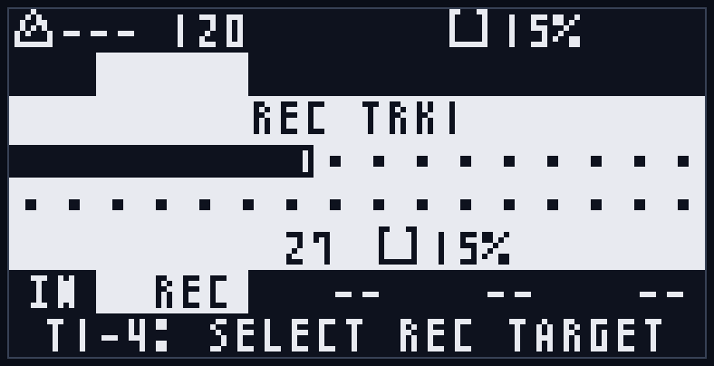
RECボタンをもう一度押すと録音停止し、自動的に再生状態になります。
このとき、STARTボタンが緑色に点灯します。
T1フェーダを操作すると、ループ再生のボリュームを調整できます。
3-2. 他のトラックを録音する
T2ボタンを押すと、T1ボタンが消灯し、T2ボタンが赤く点灯します。
これで録音ターゲットがトラック2に変更されました。
RECボタンを押すとトラック2へ録音開始し、もう一度押すと録音を終了します。
T2フェーダを操作すると、ループ再生のボリュームを調整できます。
3-3. オーバーダブで重ね録り
さらにトラック1か2を録音ターゲットにした状態で、RECボタンを押すと、オーバーダブが開始されます。
このときオーバーダブのポップアップ表示が行われます。
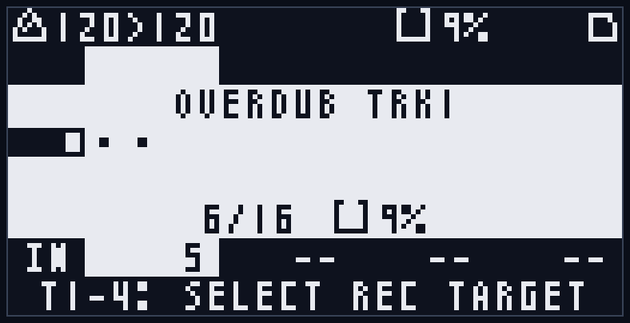
オーバーダブ時の過去録音のレベルはFDBKフェーダで調整することができます。
オーバーダブ継続中は、先頭からループしてオーバーダブを続けます(*1)。
再度RECボタンを押すとオーバーダブを停止します。
*1 FDBKを少し下げた状態でオーバーダブし続けることで、ディレイエフェクトのように徐々に過去の音を減衰させる効果が得られます。
3-4. やり直す
本機はトラック単位の一段階Undoに対応しています。
録音済みのトラックのT1-T4ボタンを押して、録音ターゲットに設定後、FUNC+CLEARボタンを押すことで前回の録音/オーバーダブ状態に戻すことができます。
再度FUNC+CLEARを押すとRedoが行われ、最新の録音/オーバーダブ状態に戻ります。
トラックの録音自体をやり直したい場合は、CLEARボタンを押しながらT1-T4ボタンを押すと、対応するトラックの録音がクリアされます。
クリア直後は、FUNC+CLEARで最新の録音/オーバーダブ状態に戻ることも可能です。
全てのトラックをクリアしたい場合は、CLEARボタンを押しながらLOOPボタンを押してください。
確認ポップアップが表示されるので、T3ボタンを押せば全トラックの録音が消去されます。
クリアをやめたい場合はT4ボタンを押すとキャンセルできます。
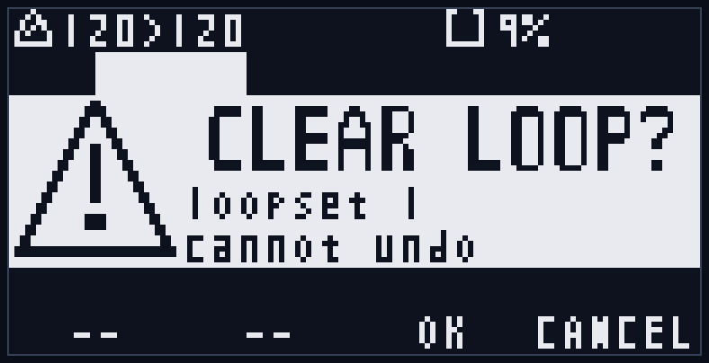
4. 機能コンセプト
4-1. トラック
4つのトラックが存在し、各トラックは以下の情報を持ちます:
- 録音済みサンプル
- Undoバッファ
- ベーステンポ(録音時のテンポ情報)
- 録音ステップ数
- 再生方向(順方向/逆方向)
- 再生スピード(x0.5/x1/x2)
- パンニング
- 再生ウィンドウ(ループ範囲。録音サンプルのうち実際にループ再生する開始位置と範囲。サンプル自体は変更しません)
- 再生レベル(SDカード保存対象外、各トラックフェーダからリアルタイムに反映)
一般的なマルチトラックルーパとは異なり、ステップ数や再生方向などの情報もトラック別に保持するため、ポリリズム的なパフォーマンスが可能です。
4-2. ステップ
4ppqn (拍ごとに4つ)のクロック単位をステップと呼びます。
再生/録音/ループセット切り替え/Undoなどは、このステップが進むタイミングで行われます。
4-3. ベーステンポ
トラックを録音した時のテンポ(BPM)です。
ループ録音後にテンポを変更すると、サンプル再生スピードがベーステンポと再生テンポの速度差で補正されます。
例えば、80BPMで録音後にテンポを160BPMにすると、サンプル再生スピードは2倍になります。
4-4. 録音ターゲットと編集ターゲット
トラックの選択状態には、「録音ターゲット」と「編集ターゲット」の2種類が存在します。
「録音ターゲット」は通常モードで選択でき、録音対象のトラックの指定、Undo対象トラックの指定に使われます。
一方、「編集ターゲット」はトラック編集モードにおける、編集対象となるトラックの指定に使われます。
また、トラック編集モードに入っている間は、Undo対象トラックは「録音ターゲット」ではなく「編集ターゲット」になります。
(「7-2. トラック編集モード」参照)
4-5. 再生レベル/再生方向/再生速度/PAN/再生ウィンドウ
各トラックの再生情報です。
再生レベル以外はSDカードに自動保存されます。
再生ウィンドウ(ループ範囲)は、録音サンプルのうち実際にループ再生する範囲を指定する設定で、トラック編集モードで編集できます(「7-2. トラック編集モード」参照)。
4-6. ループセット
全4トラックの録音状態(Undoバッファ含む)と再生情報は、ループセットという単位で扱われます。
ループセットを切り替えることで、全トラックのループを一括で切り替えることができます。
4-7. DRY/FDBKと録音レベルの関係
DRYレベルは入力レベルだけでなく、録音レベルとしても機能します。
また、FDBKレベルは初回録音では機能せず、オーバーダブ時に前回録音の減衰率として機能します。
4-8. クロック同期
内部クロックによる同期の他に、クロック入力とMIDI入力による同期に対応しています。
ただし、MIDI入力による同期には別売のMIDI拡張モジュール(MIDI CoM+)が必要です。
(「8. クロック同期とMIDI」参照)
4-9. 自動バックアップ
ループセットへの変更は、Undoバッファも含め、SDカードに自動的に保存されます。
次回起動時には、SDカードから、最後に選択されたループセットの情報が自動的に読み込まれます。
(「9. SDカード保存」参照)
5. UIコンセプト
5-1. ボタン
T1、T2、T3、T4ボタンはモードごとに機能が切り替わります。
FUNC、LOOP、CLEAR、REC、STARTボタンは各モード共通の操作ですが、モードによっては操作禁止となるものがあります。
(「7. 各モード詳細」参照)
5-2. レベルフェーダ
FDBK、SPEED、DRY、T1、T2、T3、T4すべてのフェーダがモード共通で利用できます。
ただし、外部同期時はSPEEDフェーダは無効化されます。
再生中は、SPEEDフェーダのLEDが拍の周期で明滅します。拍頭で最も明るく光り、拍の終わりに向かって徐々に暗くなる動きで、現在のテンポと拍のタイミングが目で分かり、録音を始める拍位置の手がかりになります。この明滅は内部クロック・外部同期のどちらでも拍位相に同期します(外部同期でSPEEDフェーダ自体が無効でも明滅は行われます)。停止中はLEDが点灯したままになります。
5-3. トランスポート入出力(CLK/RST/REC IN, CLK OUT)
CLKは外部クロック同期用、RSTは再生位置リセットです。
RECは録音トリガーで、RECボタン押下と同じ機能を持っています。
内部同期でも外部同期でも、再生中はCLK出力からクロックパルスが出力されます。
停止中はクロックパルスの出力も停止します。
5-4. 画面構成
どのモードでも、共通で右上にステータスバッジの表示が行われます。
(「Appendix C」参照)
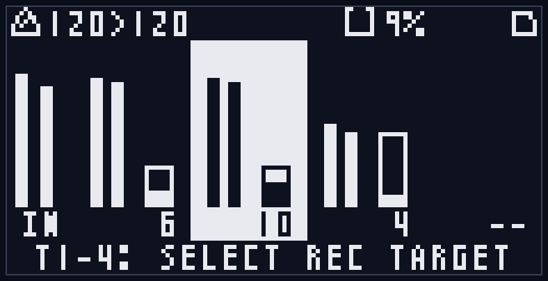
また、録音中などには専用のポップアップが表示されます。
何かエラーが発生した時や、特別な情報通知では情報や警告のポップアップが表示されます。
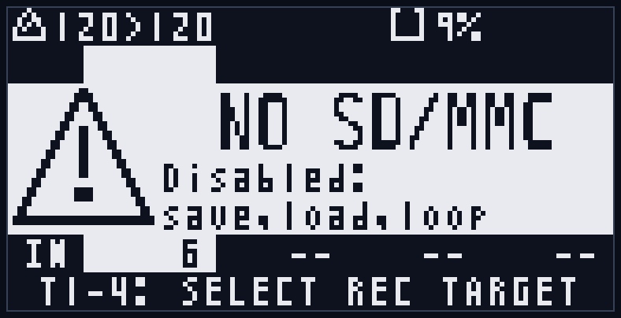
詳細は、「6. モード共通操作」や「7. 各モード詳細」を参照してください。
6. モード共通操作
6-1. 録音と再生
6-1-1. 録音
録音は、選択中の録音ターゲット(通常モードでT1-T4ボタンにより指定)に対して行われます。
RECボタンを押すと録音が開始し、もう一度押すと録音停止します。REC入力にトリガーパルスを入力しても同じ動作です。
録音中はRECボタンが赤く点灯し、録音ポップアップが表示されます。
ポップアップにはトラック番号(REC TRKn)、録音長を示す拍マーク、録音済みステップ数、メモリ使用率(RAMアイコン+%)が表示されます。ステップ数とメモリ使用率は下段に左右に並んで表示され、録音中はステップ数がリアルタイムにカウントアップします。
録音レベルはDRYフェーダで設定します(「4-7. DRY/FDBKと録音レベルの関係」参照)。
録音を停止すると、自動的に再生状態に移行します(STARTボタンが緑色に点灯)。
また、録音中にRECボタンでなく、STARTボタンを押すと、その場で録音を停止し、同じトラックのオーバーダブへ移行します。
再生中・クロック動作中に録音を開始した場合、録音開始のタイミングはLoop Sync設定に従って揃えられます(Loop Syncは録音/オーバーダブの開始などをクロックに合わせるための設定です。「7-4. システム設定モード」参照)。録音停止は即座に行われます。
なお、すでに録音済みのトラックを録音ターゲットにした状態でRECを押すと、録音ではなくオーバーダブが開始されます(「6-2. オーバーダブ」参照)。
* 起動直後やループセット切り替え直後は、Undo用データの読み込み中("SYNCING")に録音開始が一時的に保留されることがあります。表示が消えてから操作してください。
6-1-2. 再生/停止
STARTボタンを押すと、全トラックの再生を開始/停止します。再生中はSTARTボタンが緑色に点灯します。
再生中はCLK出力から同期クロックパルスが出力され、停止すると出力も止まります(「5-3. トランスポート入出力」参照)。
各トラックは個別の録音長・再生方向・再生速度を持つため、再生中はそれぞれの長さでループします(「4-1. トラック」参照)。
内部クロック同期時は、STARTを押した瞬間がクロックの起点になります。
外部クロック同期時は、再生開始が次のステップ境界に揃えられます。
6-1-3. オートストップ録音
通常の録音は手動で停止しますが、FUNC+RECで録音を開始すると、あらかじめ決めたステップ数に達した時点で自動的に録音停止します。
停止するステップ数は、システム設定の「Auto Stop」で1〜128ステップの範囲で設定できます(初期値64ステップ=16拍、最大128ステップ=32拍。「7-4. システム設定モード」参照)。
録音中ポップアップには、自動停止する位置が縦棒で表示されます。
すでに通常RECで録音しているときにFUNC+RECを押すと、その時点以降の区切りのよいタイミングで録音停止が予約されます。
停止するタイミングはLoop Sync設定に従います(「7-4. システム設定モード」参照)。
6-2. オーバーダブ
6-2-1. オーバーダブ開始/停止
録音済みのトラックを録音ターゲットにした状態でRECボタンを押すと、オーバーダブが開始されます。
オーバーダブ中はRECボタンが赤く点灯し、オーバーダブポップアップ(OVERDUB TRKn)が表示されます。
ポップアップ下段には、オーバーダブ済みステップ数とループ長が「録音済み/全体」の形式(例: 123/256)で表示され、ループを一周するとその値で固定されます。
オーバーダブ中は、過去の録音を再生しながら入力音を重ねて録音し、ループ末尾に達すると先頭に戻ってオーバーダブを継続します。再生ウィンドウ(ループ範囲)を設定している場合、オーバーダブはウィンドウ内のみに行われます(「7-2. トラック編集モード」参照)。
過去録音のミックス率(減衰率)はFDBKフェーダで設定します(「4-7. DRY/FDBKと録音レベルの関係」参照)。FDBKを下げた状態で重ね続けると、ディレイのように過去の音が徐々に減衰します。
再度RECボタンを押すとオーバーダブを停止します。停止は即座に行われます。
また、録音中にSTARTボタンを押した場合も、録音を停止してそのままオーバーダブに移行します(「6-1-2. 再生/停止」参照)。
6-2-2. オートストップオーバーダブ
FUNC+RECで録音済みトラックのオーバーダブを開始すると、ループ一周分のオーバーダブを行った時点で自動的に停止します(再生ウィンドウを設定している場合は、ウィンドウ一周分で停止します)。
通常RECで開始したオーバーダブの途中でFUNC+RECを押した場合は、次の16ステップ(4拍)ごとの区切り、またはループ一周のいずれか早いタイミングで停止します。
6-3. Undo/クリア操作
6-3-1. トラック録音のUndo/Redo
本機はトラック単位で一段階のUndo/Redoに対応しています。
FUNC+CLEARボタンを押すと、対象トラックを前回の録音/オーバーダブ状態に戻します(Undo)。もう一度FUNC+CLEARを押すと、最新の状態に戻ります(Redo)。
Undoの対象トラックは、通常モードでは録音ターゲット、トラック編集モードでは編集ターゲットになります(「4-4. 録音ターゲットと編集ターゲット」参照)。
再生中のUndo/Redoはステップ境界に揃えて適用され、停止中は即座に適用されます。
次の状態ではUndoは行えず、警告が表示されます:
- 録音/オーバーダブ中("UNDO BLOCKED")
- Undo用データの同期中("SYNCING")
- ループセット選択モード中("UNDO BLOCKED"。選択専用のため)
表示が消えてから操作してください(「Appendix D」「Appendix E-6」参照)。
6-3-2. トラックのクリア
CLEARボタンを押しながらT1-T4ボタンを押すと、対応するトラックの録音が即座にクリアされます。
クリアが実行されると、画面中央に "CLEAR TRKn"(nはトラック番号)が約1秒間表示されます(「Appendix C-2」参照)。
クリア直後は、そのトラックを録音ターゲット(トラック編集モードでは編集ターゲット)にした状態でFUNC+CLEARを押すと、クリア前の録音状態に戻すことができます(「6-3-1」参照)。
なお、Undo用データの同期中は"SYNCING"が表示され、クリアが一時的に保留されます。
ループセット選択モードではトラックの個別クリアはできません("CLEAR BLOCKED / loop select"。「Appendix D」参照)。
6-3-3. ループセットのクリア
CLEARボタンを押しながらLOOPボタンを押すと、現在のループセットの全トラック(Undoデータを含む)を一括でクリアします。
誤操作防止のため確認ポップアップ("CLEAR LOOP?")が表示されます。T3ボタンを押すと実行、T4ボタンを押すとキャンセルされます。
この操作はトラックの個別クリアと異なり、Undoで元に戻すことはできません。SDカード上の保存データも削除され、ループセットは未録音(NEW)の状態に戻ります。
次の場合はクリアできず、対応する警告が表示されます:
- SDカードが使えない("CLEAR BLOCKED / No SD")
- 録音/オーバーダブ中("CLEAR BLOCKED / Recording...")
- Undoデータの同期中("SYNCING")
- 保存/読み込み/スキャンなどの処理中("CLEAR BLOCKED / Busy...")
- ループセット選択モード中("CLEAR BLOCKED / loop select")
(「Appendix D」参照)
6-4. リセット操作
再生位置をループ先頭に戻す操作です。
FUNC+STARTボタンを押すと、全トラックの再生位置がループ先頭にリセットされます。RST入力にトリガーを入力しても同じ動作です。
リセットは再生中のステップ境界に揃えて適用されます。
RST入力をゲートとしてHIGHに保持し続けている間は、再生位置が先頭に固定されます(「5-3. トランスポート入出力」参照)。
また、MIDI START受信時にも、再生位置のリセットと再生開始が行われます(「8. クロック同期とMIDI」参照)。
6-5. 各モードへの遷移
起動直後は通常モードになっています。
以下の操作で他のモードに移動できます。
| 操作 | 遷移先のモード |
|---|---|
| FUNC+T1/T2/T3/T4 | 押したトラックボタン(T1-4)に対応するトラックを編集ターゲットにして、トラック編集モードに遷移。 |
| FUNCx2 (ダブルタップ) | 通常モード |
| LOOP | ループセット選択モード |
| FUNC+LOOP | システム設定モード |
* 「A+B」の記述は「Aボタンを押しながらBボタンを押す」の意味
また通常モード以外は、そのモードに遷移したときと同じ操作を繰り返すことで通常モードに戻ります。
通常モード復帰操作:
- トラック編集モード: FUNC+編集ターゲットトラックのT1-4ボタン
- ループセット選択モード: LOOPボタンを再度押す
- システム設定モード: FUNC+LOOPボタンを再度押す
- 全モード共通: FUNCボタンをダブルタップ
7. 各モード詳細
各モードは、共通操作(「6. モード共通操作」)に加えて、そのモード固有のT1-T4ボタンの機能と画面表示を持ちます。
モード間の遷移操作は「6-5. 各モードへの遷移」を参照してください。
7-1. 通常モード
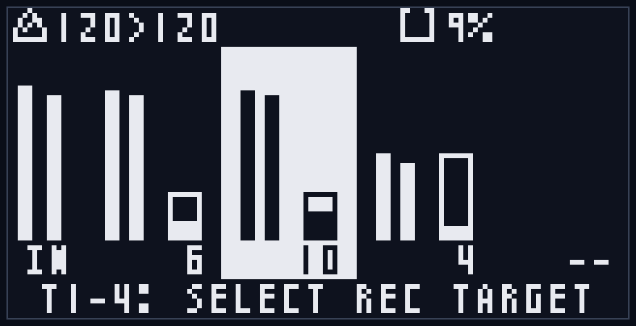
起動直後のモードで、録音ターゲットの選択を行う基本画面です。
T1-T4ボタンを単独で押すと、録音ターゲットを対応するトラックに切り替えます。選択中のトラックはボタンが赤く点灯し、画面上でも対応するトラック列が反転表示されます(録音/オーバーダブ中はターゲットの切り替えはできません)。
録音(REC)、再生(START)、オーバーダブ、オートストップ、Undo/クリア、リセットといった共通操作はすべてこのモードで利用できます(「6. モード共通操作」参照)。
画面構成:
- ヘッダ(最上段): テンポ表示(ベーステンポ>再生テンポのBPM)、メモリ使用率(水タンクアイコン+%)、右上の処理中バッジ
- 左端: 入力レベルメータ(L/R、"IN"表示)
- トラック列(4列): 各トラックの再生レベルメータ(L/R)、再生位置/状態(録音中は"REC"、再生中はステップ番号、逆再生時は"<"付き)、ループ長と再生位置を示すプログレスバー(再生ウィンドウ設定時は、再生位置がウィンドウ内の実位置に表示されます)
- フッタ: 操作ヒント("T1-4: SELECT REC TARGET")
LEDの点灯:
- T1-T4: 録音ターゲットのトラックが点灯
- REC: 録音ターゲットが録音/オーバーダブ中に点灯
- START: 再生中に点灯
7-2. トラック編集モード
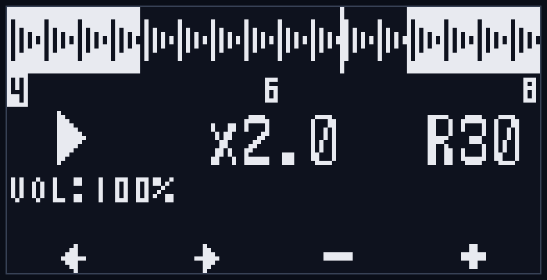
FUNC+T1-T4で対応するトラックを編集ターゲットにして遷移します。トラックごとの再生パラメータ(再生方向・再生速度・パンニング・再生ウィンドウ)を編集するモードです。これらの設定はSDカードに自動保存されます(「4-5. 再生レベル/再生方向/再生速度/PAN/再生ウィンドウ」参照)。
T1-T4ボタンの機能:
- T1/T2: 編集する項目を選択(←/→。再生方向→再生速度→パン→ウィンドウ開始→ウィンドウ長の順に移動)
- T3/T4: 値の変更(−/+。押し続けると連続変化。パン・再生ウィンドウの項目では押し続けるとさらに速く変化します)
- T3とT4を同時に押すと、選択中の項目を初期値に戻します(パン=センター(C)/ウィンドウ開始=0/ウィンドウ長=全体)
編集できる項目:
- 再生方向: 順方向(FWD、右向き三角)/逆方向(REV、左向き三角)
- 再生速度: x0.5 / x1.0 / x2.0
- パン: C(センター)/ L1〜L100 / R1〜R100
- 再生ウィンドウ(ループ範囲): 録音サンプルのうち実際にループ再生する範囲。中段のステップタイムラインで、左の数値=ウィンドウ開始ステップ、右の数値=ウィンドウ長(ステップ数)を編集します。ウィンドウは録音末尾を跨いで巻き戻ることもできます(例: 開始1・長さ16のとき、末尾→先頭→開始位置と回り込んでループ)。録音済みかつ録音/オーバーダブ中でないトラックでのみ編集できます。
画面構成:
- 上段: 録音サンプルの波形サムネイルと再生位置マーカー。再生ウィンドウ(ループ範囲)を設定している場合、範囲外の部分が反転表示されます
- 中段: ステップタイムライン(左=ウィンドウ開始ステップ、中央=現在のステップ(ウィンドウ内相対)、右=ウィンドウ長)。ウィンドウ開始/長を選択中は、その数値が反転表示されます
- パラメータ行: 再生方向(三角)/ 再生速度 / パン。選択中の項目は反転表示
- 下段: トラック音量(VOL:NN%、表示のみ。各トラックフェーダで変化)
- フッタ: ←/→/−/+ のアイコン
LEDの点灯:
- 編集ターゲットのトラックが点滅
- 録音ターゲット(編集ターゲットと別の場合)は点灯
このモードでも録音・再生などの共通操作は利用できますが、録音対象はあくまで録音ターゲットです(編集ターゲットとは別に管理されます。「4-4. 録音ターゲットと編集ターゲット」参照)。
なお、トラック編集モードに入っている間は、Undo(FUNC+CLEAR)の対象トラックも編集ターゲットになります。
再生方向・再生速度・再生ウィンドウの変更は、再生中は次のステップ境界で反映されます。パンは即座に反映されます。
7-3. ループセット選択モード
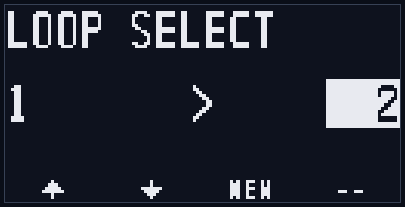
LOOPボタンで遷移します。アクティブなループセット(1〜128)を切り替えるモードです。
録音・クリア・Undoなどの編集操作はできません(「Appendix D」参照)。
ループセットの切り替えには、まずLOAD操作で対象のループセットを読み込む必要があります。
読み込み完了後にT3ボタンを押すとループセットの切り替えが実行されます。
T1-T4ボタンの機能:
- T1/T2: 対象ループセット番号を選択(−/+。1〜128をループ)
- T3: 対象ループセットの状態に応じて動作が変わります(下記)
- T4: 未使用
T3ボタンの動作(画面下とフッタのラベルに表示されます):
- LOAD: 録音済みの別ループセットを選んだとき。SDカードからの読み込みを開始します(プログレスバー表示)。読み込みが完了すると表示が「CHNG」に変わります。
- CHNG: 読み込み完了後にもう一度T3を押すと、ループセットを切り替えます。
- NEW: 未録音(空き)のループセットを選んだとき。新規ループセットとして即座に切り替えます。
- --: 現在のループセットを選んでいるとき(切り替え対象なし)。
切り替えのタイミングは、停止中は即座に、再生中はLoop Sync設定に従ってクロックの区切りに揃えられます。切り替えが完了すると自動的に通常モードへ戻ります。
画面構成:
- タイトル: "LOOP SELECT"
- 中央: 現在のループセット番号 > 対象ループセット番号(対象は反転枠で表示)
- 状態表示: 読み込み進捗バー / "PRESS 3 TO CHANGE!" / 切り替え中アニメーション / "SAVING..."(保存待ち)
- フッタ: ↑/↓(T1/T2)、T3ラベル(LOAD/NEW/CHNG/--、CHNGは点滅)
このモードでは、再生/停止(START)、再生位置リセット(FUNC+START)、トラック編集モードへの遷移(FUNC+Tn)は可能です。
読み込み中や切り替え確定後は、操作が制限されます(「Appendix D」参照)。
なお、読み込んだループセットに破損トラックが含まれていた場合は "DATA BROKEN" の警告が表示されます(「Appendix E-2」参照)。
7-4. システム設定モード
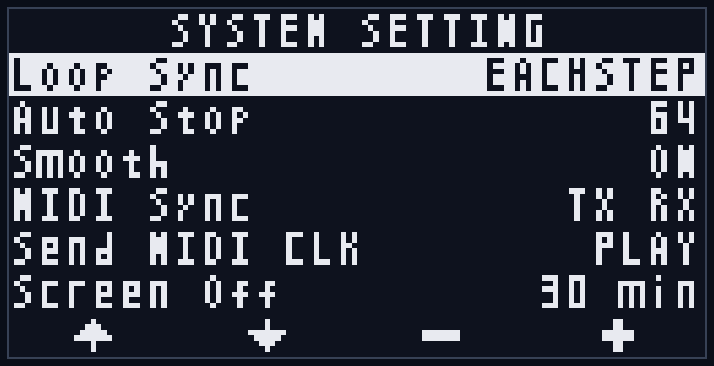
FUNC+LOOPで遷移します。本機全体の動作設定を行うモードです。設定はSDカードに自動保存され、次回起動時にも引き継がれます(「9. SDカード保存」参照)。
T1-T4ボタンの機能:
- T1/T2: カーソル移動(↑/↓)
- T3/T4: 値の変更(−/+)。Auto Stop項目のみ、押し続けると連続変化し、さらに押し続けると変化が速くなります。Auto Stop項目でT3とT4を同時に押すと、中央値(64ステップ)に戻ります
設定項目:
| 項目 | 値 | 説明 |
|---|---|---|
| Loop Sync | EACHSTEP / ANY END / T1 END | 再生中に予約される操作(録音/オーバーダブの開始、Undo、ループセット切り替えなど)を、どのタイミングでクロックに合わせて実行するかを決めます。EACHSTEP=各ステップ(最小単位)、ANY END=いずれかのトラックのループ末尾、T1 END=トラック1のループ末尾。初期値はEACHSTEP。 |
| Auto Stop | 1〜128ステップ | オートストップ録音(FUNC+REC)で自動停止するステップ数。初期値は64ステップ(=16拍)。T3/T4を押し続けると連続変化(さらに押し続けると加速)、T3+T4同時押しで中央値(64ステップ)に戻ります。(「6-1-3. オートストップ録音」参照) |
| Smooth | ON / OFF | ループの継ぎ目や録音/オーバーダブ停止時に短いクロスフェードをかけ、クリックノイズを抑える設定。初期値はON。 |
| MIDI Sync | TX RX / TX / RX / -- | MIDIクロックの送信(TX)/受信(RX)の有効・無効。別売のMIDI拡張モジュールが必要です。初期値はTX RX。(「8. クロック同期とMIDI」参照) |
| Send MIDI CLK | PLAY / ALWAYS | MIDIクロックを送信するタイミング。PLAY=再生中のみ送信(初期値)、ALWAYS=停止中も含め常時送信。外部機器を常に本機のテンポへ追従させたいときはALWAYS。(「8-3-2. MIDI送信」参照) |
| Screen Off | 10 min / 30 min / 60 min / NEVER | 無操作時にOLEDディスプレイを自動的に消灯するまでの時間。NEVERで消灯しません。初期値は30 min。 |
画面構成:
- タイトル: "SYSTEM SETTING"
- 設定項目(ラベル+現在値)を一覧表示。選択中の行は反転表示
- フッタ: ↑/↓/−/+ のアイコン
8. クロック同期とMIDI
LilaC Repeater は、内部クロックのほか、CLK入力(クロックパルス)とMIDIクロック(別売のMIDI拡張モジュール利用時)による外部同期に対応します。
録音/再生のステップは常にクロックに同期し、再生位置とクロックの位相はPLL制御によって保たれるため、長時間ループを再生してもサンプルとクロックの位相がズレません。
8-1. クロックソースと自動切替
クロックソースには「内部」「CLK入力(外部クロックパルス)」「MIDIクロック」の3種類があります。
ソースの切り替えは自動で行われます。
- 起動直後は内部クロックです。テンポはSPEEDフェーダで60〜240BPMの範囲で設定します。
- CLK入力にクロックパルスが入力されると、CLK入力同期に切り替わります。
- MIDIクロック(またはMIDI START)を受信すると、MIDI同期に切り替わります。
- 外部クロックが一定時間途切れると(直近の間隔の約4倍、最短約2秒)、最後に検出したテンポを保持したまま内部クロックに戻ります。
- 再生を停止すると、クロックソースは内部に戻ります(外部マスターが動作していれば、次のクロック/パルスで再び外部同期に切り替わります)。
外部同期中はSPEEDフェーダは無効になります(「5-2. レベルフェーダ」参照)。
8-2. CLK入力/出力とリセット (CLK IN / CLK OUT / RST)
クロックパルスによる同期・出力です。本機ではステップ(4ppqn = 1拍あたり4パルス)を基準にやり取りします(「4-2. ステップ」参照)。
- CLK入力: ステップ単位(4ppqn)のクロックパルスを入力します。入力されたパルスの間隔からテンポを測定し、同期します。
- CLK出力: 再生中、ステップごとに約5msのクロックパルス(4ppqn)を出力します。内部同期・外部同期のいずれでも出力され、停止中は出力されません。
- RST入力: 再生位置をループ先頭に戻します。ゲートをHIGHに保持し続けている間は先頭に固定されます(「6-4. リセット操作」参照)。
8-3. MIDI同期
別売のMIDI拡張モジュール(MIDI CoM+)を利用すると、MIDI IN/OUTを使ったクロック・トランスポート同期が可能になります。
MIDIクロックは標準の24ppqnに対応します。

MIDI拡張モジュールは、背面の MIDI EXPAND/SLAVEコネクタ に接続してください(「2-2. バック」参照)。
! 注意: MIDI拡張モジュールをMASTERコネクタに接続しないでください。
8-3-1. MIDI受信 (RX)
外部MIDIマスターから以下のメッセージを受信して同期します(MIDI Sync設定でRXが有効な場合)。
| メッセージ | 動作 |
|---|---|
| MIDIクロック (24ppqn) | MIDI同期に切り替え、テンポと位相に同期します。 |
| Start | 再生位置を先頭に戻して再生を開始します。 |
| Continue | 再生を開始します。本機では再生位置を先頭に戻して開始するため、Startと同じ動作になります。 |
| Stop | 再生を停止します。 |
| Song Position Pointer (位置0) | 再生位置を先頭に戻します。 |
8-3-2. MIDI送信 (TX)
本機のクロック・トランスポートを外部MIDI機器へ送信します(MIDI Sync設定でTXが有効な場合)。
| メッセージ | 送信タイミング |
|---|---|
| MIDIクロック (24ppqn) | システム設定「Send MIDI CLK」に従う。PLAY=再生中のみ(初期値)、ALWAYS=停止中も含め常時。いずれも内部/外部どちらのクロックでも送信します。 |
| Start | 再生を開始したとき |
| Stop | 再生を停止したとき |
Send MIDI CLK (PLAY / ALWAYS) … MIDIクロックを送信するタイミングを切り替えます。
- PLAY (初期値): 再生中のみクロックを送信し、停止中は送信しません。停止すると同期先の外部シーケンサなども止まります。
- ALWAYS: 停止中も含めてクロックを送信し続けます。外部のドラムマシンやアルペジエータを、本機が停止していても常に本機のテンポへ追従させたいときに使います(再生開始/停止のStart/Stop自体は従来どおり送信されます)。
この設定はMIDI送信(MIDI OUT)と、UARTチェインで下流のLilaC Repeaterへ送るクロックの両方に適用されます(「11. UARTチェイン」参照)。
8-3-3. MIDI Sync設定
システム設定の「MIDI Sync」で、送受信の有効・無効を切り替えます(「7-4. システム設定モード」参照)。
| 設定値 | 動作 |
|---|---|
| TX RX | 送信・受信ともに有効(初期値)。 |
| TX | 送信のみ。外部機器を本機に同期させたいとき。 |
| RX | 受信のみ。本機を外部マスターに同期させたいとき。 |
| -- | MIDI同期を無効化。内部クロックまたはCLK入力で動作します。 |
本機が同期に使うMIDIクロック・トランスポート(Start/Stop/Continue)はMIDIチャンネルを持たないシステムリアルタイムメッセージのため、MIDIチャンネルの設定は不要です。
なお、MIDI拡張モジュールで受信したメッセージはUARTチェインの下流へそのまま転送され、複数のLilaC Repeaterを同期させることができます(「11. UARTチェイン」参照)。
9. SDカード保存
LilaC Repeater は録音したループを自動的にマイクロSDカードへ保存します。SDカードはループセットの保存・読み込みのほか、システム設定の保存、サンプルインポート(セクション10)、ファームウェアアップデート(Appendix A)にも使用します。
- 対応カード: microSD / microSDHC。FAT32 でフォーマットされた32GB以下のカード。
- 保存は録音停止後に自動かつバックグラウンドで行われます。保存中はヘッダに保存インジケータが表示されます。
- SDカードが挿入されていない、または認識できない場合は "NO SD/MMC" が表示され、保存機能は無効になります(Appendix E-1)。
- 保存・読み込みの詳細なファイル構成は Appendix F を参照してください。
9-1. 動作確認済みのSDカード一覧
以下は動作確認済みのSDカードです。記載のないカードでも多くは動作しますが、相性問題が出る場合は下記のカードをお試しください。
| メーカー | 型番 | 容量 | 備考 |
|---|---|---|---|
| Gigastone | microSDHC U1 C10 UHS-I Full HD Video | 32GB | ver1.0出荷時SD |
9-2. SDカード保存内容
SDカードには LILACREP フォルダが作成され、以下が保存されます。
- ループセット: 各ループセット(1-128)のトラックが WAV ファイル＋メタ情報として保存されます。
- WAV は 48kHz / ステレオ / 32bit float 形式で、PC上でも再生・確認できます。録音時のテンポを示すBPM情報(ACIDチャンク)も埋め込まれ、対応するDAWで読み取れます(テンポ不明の場合は埋め込まれません)。
- 各トラックは2世代(A/B)のペアで保存されます。これにより、直前のテイク(Undo の戻り先)も電源を切ったあとまで保持されます。
- メタ情報にはベーステンポ・ステップ数・再生方向 / 速度・パン・再生ウィンドウ(ループ範囲)などが含まれます。
- システム設定: Loop Sync / Auto Stop / Smooth / MIDI Sync / Screen Off などの設定。
- アクティブループセット番号: 次回起動時に読み込むループセット。
保存は変更のあったトラックのみが対象で、録音・オーバーダブのたびに自動でバックアップされます(セクション4-9)。
10. サンプルインポート
PCなどで用意したWAVファイルを、SDカード経由でループセットの任意のトラックに取り込む機能です。本体側にファイル選択画面は持たず、SDカードのルートに置いた設定ファイル import.csv に取り込み内容を記述し、起動時にまとめて処理します。
10-1. 取り込みの手順
- ラックの電源を落とし、SDカードを抜いてPCで開きます。
- SDカードのルートに
samplesフォルダを作成し、取り込みたいWAVファイルを置きます。 - SDカードのルートに
import.csvを作成し、取り込み内容を記述します(書式は10-2)。 - SDカードを本体に戻して電源を入れます。起動時に画面へ "IMPORTING" と対象ファイル名が表示され、取り込みが実行されます。
- 完了すると
import.csvは_import.csvにリネームされ、各行の処理結果が最終列に追記されます。
import.csv は処理後にリネームされるため、次回以降の起動で同じ取り込みが繰り返されることはありません。取り込んだ音は通常録音したループと同じように扱われ、保存・Undo・編集ができます。
10-2. import.csv の書式
1行目はヘッダ行(列名)で、2行目以降が取り込み1件ずつです。列は名前で対応するため順序は自由で、不要な列は省略できます。
| 列 | 内容 |
|---|---|
| file | samples フォルダ内のWAVファイル名 |
| loopset | 取り込み先のループセット番号 (1〜128) |
| track | 取り込み先のトラック番号 (1〜4) |
| slot | current(通常) または undo。省略時は current |
| bpm | テンポ(BPM)で指定する場合に記述 |
| beats | 拍数で指定する場合に記述。bpmより優先 |
| steps | ステップ数で指定する場合に記述。beats・bpmより優先(変拍子向け) |
記述例:
file,loopset,track,slot,bpm,beats,steps
drums.wav,1,1,current,,4,
pad.wav,1,1,undo,,8,
bassline.wav,2,3,current,120,,
oddbar.wav,3,1,current,,,14(1行目: drums.wav をループセット1・トラック1へ「4拍」として取り込み。2行目: pad.wav を同じトラックのUndo側へ「8拍」で。3行目: bassline.wav をループセット2・トラック3へ120BPMで取り込み。4行目: oddbar.wav をループセット3・トラック1へ「14ステップ」として取り込み = 7/8拍子1小節)
10-3. テンポの指定 (steps / beats / bpm)
取り込んだループにも正しいベーステンポを設定する必要があるため、steps(ステップ数)・beats(拍数)・bpmのいずれかを必ず指定します。複数ある場合の優先順位は steps > beats > bpm です。
- steps(ステップ数): そのファイルが何ステップ(16分音符単位)かを直接指定します。
beatsは4ステップ単位(1拍=4ステップ)でしか表せませんが、stepsなら4の倍数でないステップ数も指定でき、変拍子(7/8、5/4 など)のループを正しく取り込めます。beats同様、ファイルの長さをそのままループ長とし、長さとステップ数からベーステンポが決まります。 - beats(拍数): そのファイルが音楽的に何拍かを指定します。ファイルの長さをそのままループ長とし、長さと拍数からベーステンポが決まります。長さが正確なループ素材に向いています(
recorded_steps = beats × 4)。 - bpm: テンポを直接指定します。指定BPMの拍グリッドに合わせてループ長を整え、WAVがグリッドより長ければ末尾をカット、短ければ無音を足します(いずれも継ぎ目のクリックを防ぐ短いフェードが掛かります)。テンポは分かるが長さがぴったりでない素材に向いています。
> ステップあたりのサンプル数が少なすぎる(目安: 64サンプル未満)指定はテンポが過密として ERROR になります。短いWAVに大きなステップ数を指定しないでください。
10-4. current と undo (ループバリエーション)
slot列で、そのトラックの取り込み先を選べます。
- current: 通常の取り込み先です。そのトラックに既存のテイクがある場合、既存テイクはUndo側へ退避され、取り込んだ音が再生されます(Undoで元に戻せます)。
- undo: Undo操作で呼び出せる「裏」のテイクとして取り込みます。同じトラックに
currentとundoの2つを取り込むと、Undoボタンで2つのループを切り替えられるため、ループのバリエーションとして活用できます。
10-5. 対応フォーマットと制限
- サンプリングレート: 44.1kHz / 48kHz / 96kHz (内部の48kHzへ自動変換します)
- ビット数: 16 / 24 / 32bit 整数、または 32bit 浮動小数点
- チャンネル: モノラル / ステレオ (モノラルは左右へ複製します)
- 1トラックの長さの上限は約20秒です。これを超えるファイルは取り込まれません。
- ファイル名は半角英数字(ASCII)を推奨します。8文字を超える長い名前も使用できます。
10-6. 結果の確認
取り込みが完了すると、画面に "IMPORTED!" と成功・失敗の合計件数("OK: n" / "Fail: n")が約2秒間表示されます。
各行ごとの結果は、取り込み後の _import.csv の各行末尾(result列)に記録されます。成功は OK、失敗は理由付きの ERROR: ... です。エラーがあった場合は、SDカードルートの lr_log.txt にも記録が追記されます。失敗した行はスキップされ、他の行や既存のループには影響しません。
11. UARTチェイン
複数のLilaC Repeaterを接続し、クロックとトランスポート(再生/停止など)を共有して同期させる機能です。
背面のUARTコネクタを数珠つなぎにすることで、先頭(マスター)ユニットのクロック/トランスポートを後続のユニットへ次々と伝えます。
マスターのクロックは、外部から受け取ったMIDIクロックだけでなく、ユニット自身の内部クロック(SPEEDフェーダのテンポ)やCLK入力/トリガー同期でもかまいません。つまり、MIDI拡張モジュールを付けていないユニットでも、内部テンポでチェインのマスターになれます。

11-1. 接続
接続は上流→下流の一方向です。
- 上流ユニットの MASTERコネクタ(背面#5)を、下流ユニットの MIDI EXPAND/SLAVEコネクタ(背面#4)に接続します。
- これを繰り返して数珠つなぎにします(ユニットA #5 → ユニットB #4、ユニットB #5 → ユニットC #4 …)。
- 先頭ユニットの入力(MIDI EXPAND/SLAVEコネクタ)には、MIDI拡張モジュール(MIDI CoM+)を接続して外部MIDIクロックを供給することも可能です(「8-3. MIDI同期」参照)。
! 注意: コネクタの極性に注意してください。ケーブルの赤いラインとシルクスクリーンの白い線の方向を一致させてください(「2-2. バック」参照)。
11-2. 中継される内容
- SLAVEコネクタで受信したメッセージは、SysExを除いてそのままMASTERコネクタへ転送されます。MIDIクロック・Start/Stop/Continue・Song Positionなどが下流へ伝わります。
- この転送は、各ユニットのMIDI Sync設定に関わらず常に行われます。一方、転送されたクロックに各ユニットが実際に同期するかどうかは、そのユニットのMIDI Sync設定(RXが有効か)に従います(「8-3-3. MIDI Sync設定」参照)。
- 受信メッセージの転送に加えて、各ユニットは自身が生成するクロック・トランスポート(内部クロック/CLK入力/トリガー同期で動作しているときのMIDIクロックとStart/Stop)もMASTERコネクタへ送出します。これにより、外部MIDIを入力していないユニットでもマスターとして下流を駆動できます。送出のタイミングはシステム設定「Send MIDI CLK」(PLAY=再生中のみ/ALWAYS=停止中も常時)に従います(「8-3-2. MIDI送信」参照)。
- 現状はチェインは下流方向の一方向ですが、将来的には双方向通信可能な拡張モジュールが接続可能になるかもしれません。
11-3. 使い方の例
例1: 外部MIDIをマスターにする — 先頭ユニットにMIDI拡張モジュールを取り付け、外部シーケンサやDAWのMIDIクロックを入力すると、そのクロックとトランスポートがチェイン上のすべてのユニットへ伝わり、全ユニットが同じテンポ・タイミングで同期します。
例2: 先頭ユニットの内部クロックをマスターにする — 先頭ユニットにMIDI拡張モジュールを付けず、内部クロック(SPEEDフェーダのテンポ)で動かします。先頭ユニットがマスターとなり、その再生開始/停止とテンポがチェイン全体へ伝わります。先頭ユニットを停止中もチェインへクロックを流したい場合は、先頭ユニットの「Send MIDI CLK」をALWAYSにします。
いずれの場合も、下流ユニットのMIDI SyncはRXが有効(TX RX または RX)になっている必要があります(「7-4. システム設定モード」参照)。
Appendix A. ファームウェアアップデート
マイクロSDカードにファームウェアのファイルを配置することにより、簡単にアップデートができます。
手順:
- ラックの電源を落とします。
- LilaC Repeaterモジュールをラックから外し、SDカードを抜き取ります。
- SDカードリーダーを使い、PC上でSDカードを開きます。
- ファームウェアのバイナリファイル ("lr_v1_0.bin"など) をSDカードのルートディレクトリに配置します。
- LilaC RepeaterモジュールにSDカードを挿入し、ラックにマウントします。
- 電源を入れると、自動的にファームウェアアップデート処理が実行され、しばらく経つと通常起動します。
以上でファームウェアアップデートは完了します。
しかし、SDカードルート上にファームウェアのバイナリファイルが残っているままだと、起動のたびにファームウェアアップデートが実行されてしまうので、正常にアップデートが行えたらSDカード上のバイナリファイルは削除することをお勧めします。
Appendix B. チートシート
ボタン操作(モード共通)
| 操作 | 機能 |
|---|---|
| REC | 録音 開始/停止(録音済みトラックではオーバーダブ) |
| FUNC+REC | オートストップ録音(指定ステップ数または一周で自動停止) |
| START | 全トラック 再生/停止(録音中はオーバーダブへ移行) |
| FUNC+START | 再生位置を先頭へリセット |
| LOOP | ループセット選択モード ⇔ 通常モード |
| FUNC+LOOP | システム設定モード ⇔ 通常モード |
| FUNC+Tn | トラックn のトラック編集モード(同じトラックで再押し=戻る) |
| FUNC+CLEAR | Undo(再度押すと Redo) |
| CLEAR+Tn | トラックn をクリア(即時。FUNC+CLEAR で戻せる) |
| CLEAR+LOOP | アクティブループセットを全クリア(確認あり・Undo不可) |
| FUNC ダブルタップ | 通常モードへ戻る |
| CLEAR(単独) | 無効(誤操作防止) |
モード別の T1-T4(単独押し)
| モード | T1 / T2 | T3 / T4 |
|---|---|---|
| 通常 | 録音ターゲット選択(T1-T4) | 録音ターゲット選択(T1-T4) |
| トラック編集 | 項目移動(←/→) | 値変更(−/+、長押しで連続。パン・再生ウィンドウは加速あり)。T3+T4=選択中項目を初期値へ(パン=C/ウィンドウ開始=0/ウィンドウ長=全体) |
| ループセット選択 | 対象ループセット選択(−/+) | T3=LOAD→CHNG(空き番号は NEW) / T4=未使用 |
| システム設定 | カーソル移動(↑/↓) | 値変更(−/+。Auto Stop は長押しで連続・加速)。Auto Stop で T3+T4=中央(64) |
アナログ(ノブ/フェーダ)
| 操作子 | 機能 |
|---|---|
| SPEED | テンポ 60-240 BPM(内部クロック。外部同期時は無効)。再生中はLEDが拍周期で明滅(拍頭で最大→拍末で最小) |
| FDBK | オーバーダブの feedback 量 |
| DRY | 入力/録音レベル |
| T1-T4 | 各トラックの再生音量 |
外部入出力
| 端子 | 機能 |
|---|---|
| REC入力 | 録音トグル(RECボタンと同じ) |
| RST入力 | 再生位置リセット(ゲートHIGH中は先頭固定) |
| CLK入力 | 外部クロック同期(エッジ入力で自動切替) |
| CLK出力 | ステップクロック出力(再生中) |
| MIDI(別売 MIDI CoM+) | クロック同期 / Start・Stop・Continue・Song Position |
操作の制限(モード別の禁止操作)は Appendix D を参照してください。
Appendix C. 画面上のステータス通知
操作フィードバックや処理状態を知らせる、画面上の小さな通知表示です。モードに依存せず共通で表示されます。
C-1. ステータスバッジ
画面右上(ヘッダ右端)に、処理中であることを示す小さなアイコンが表示されます。
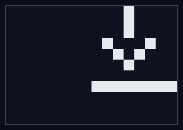
| アイコン | 意味 |
|---|---|
| SDカード型アイコン | SDカードへの保存中。表示中は電源を切らないでください(書き込み中の電源断については「Appendix E-3」参照)。 |
| 下向き矢印アイコン | Undo用データの読み込み中("undo data loading")。消えるまでUndo操作などが一時的に保留されます(「6-3-1. トラック録音のUndo/Redo」「Appendix E-6」参照)。 |
C-2. トースト通知
再生/停止やUndo、トラックのクリア操作時に、画面中央へ約1秒間、操作内容が小さく表示されます(トースト)。操作が受け付けられたことの確認表示です。
| 表示 | タイミング |
|---|---|
| START | 再生を開始したとき |
| STOP | 再生を停止したとき |
| UNDO | Undo/Redoが適用されたとき(操作がブロックされた場合は表示されません) |
| CLEAR TRKn | CLEAR+T1〜T4でトラックを個別クリアしたとき(nはトラック番号1〜4。同期中などでクリアが保留された場合は表示されません) |
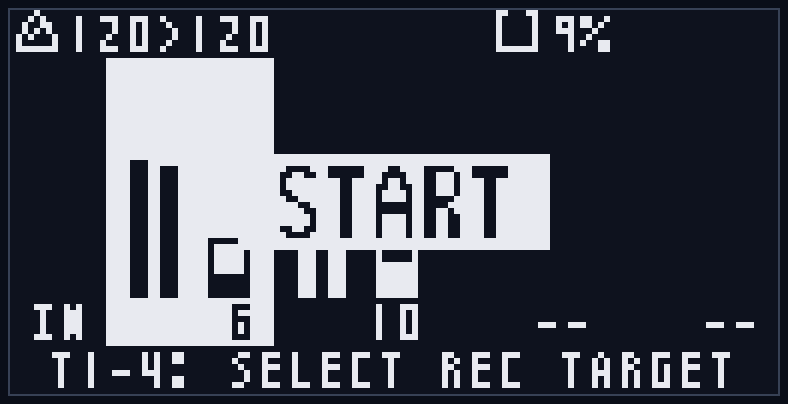
Appendix D. モード別禁止操作一覧
操作のブロックには、(A) 特定のモードでのみ禁止されるものと、(B) 状態に応じて全モード共通で禁止されるものがあります。警告ポップアップは数秒で自動的に消えます。
(A) モード固有の禁止操作
通常モード / トラック編集モード / システム設定モード: モード固有の禁止操作はありません((B)の共通ブロックのみ)。なお T1-T4 の役割はモードで異なります(通常=録音ターゲット選択、トラック編集・システム設定=カーソル/値変更)。
ループセット選択モード: 取り違えや読み込み・切替との競合を防ぐため、一部の操作が制限されます。
| 操作 | 挙動 | 画面表示 |
|---|---|---|
| REC(録音) / 外部RECトリガー | 禁止 | "REC BLOCKED"(読み込み中は "LOADING") |
| CLEAR+Tn(トラック個別クリア) | 禁止 | "CLEAR BLOCKED / loop select" |
| FUNC+CLEAR(Undo) | 禁止 | "UNDO BLOCKED" |
| CLEAR+LOOP(ループセット全クリア) | 禁止 | "CLEAR BLOCKED / loop select" |
| T4 | 未使用(無反応) | — |
| 読み込み中(T3でLOAD実行中)の操作全般 | FUNC+START 以外は受け付けない | "LOADING / Please wait..." |
| 切替確定後(T3でCHNG/NEW後・適用待ち)の T1/T2/T3 | 無反応(対象ループセットを固定)。LOOP または FUNC で抜けると取り消し | — |
ループセット選択モードは「選択専用」です。録音・クリア・Undo などの編集操作はできません(再生/停止(START)とトラック編集モードへの遷移(FUNC+Tn)は可能です)。
(B) 状態による操作ブロック(全モード共通)
| 操作 | ブロックされる条件 | 画面表示 |
|---|---|---|
| LOOP(ループセット選択へ入る) | SDが使えない | "LOOP BLOCKED / No SD" |
| 〃 | 録音/オーバーダブ中 | "LOOP BLOCKED / Recording..." |
| CLEAR+LOOP(ループセット全クリア) | SDが使えない | "CLEAR BLOCKED / No SD" |
| 〃 | 録音/オーバーダブ中 | "CLEAR BLOCKED / Recording..." |
| 〃 | Undoデータの同期中 | "SYNCING / undo data loading..." |
| 〃 | 保存/読み込み/スキャン中 | "CLEAR BLOCKED / Busy..." |
| 外部RECトリガー | 確認ポップアップ中・起動時のループ読み込み中 | (無反応) |
補足
- solo CLEAR は全モードで無反応です(誤操作防止。CLEAR は他ボタンと組み合わせて使います)。
- 確認ポップアップ表示中は、T3(OK) / T4(CANCEL) 以外のボタンを受け付けません。
- FUNC+LOOP(システム設定へ)は録音中でも可能です(録音中にブロックされるのは solo LOOP のループセット選択への遷移のみ)。
Appendix E. トラブルシューティング
画面に表示される主な警告と対処方法です。警告ポップアップは数秒で自動的に消えます。
E-1. NO SD/MMC
起動時に "NO SD/MMC"("Disabled: save,load,loop")と表示される状態です。SDカードが使えないため、保存・読み込み・ループセット操作が無効になります。
- 原因: SDカードが挿入されていない・正しく挿さっていない、フォーマットが非対応、またはカードの故障。
- 対処:
- 電源を切り、SDカードがスロットに正しく挿さっているか確認します。
- PCでカードを開き、FAT32(32GB以下)でフォーマットされているか確認します。
- 改善しない場合は、動作確認済みのSDカード(9-1)に交換してください。
- この状態でも録音・再生はできますが(RAM上)、電源を切ると録音内容は保存されず失われます。
E-2. DATA BROKEN
ループセットの読み込み時に "DATA BROKEN" と表示される状態です。保存データの一部が壊れていることを示します。
- 原因: 保存中の電源断や、SDカードの不良・抜き差しによるファイル破損。
- 挙動: 壊れたトラックは空の状態で読み込まれます("loaded empty")。壊れていないトラックや他のループセットはそのまま使えます。
- 対処:
- 該当トラックを録音し直すと、新しいデータで上書き保存され回復します。
- 繰り返し発生する場合はカードの不良が疑われるため、別のカードに交換してください。
- 本機は各トラックを2世代(A/B)で保存しており、片方が壊れてももう片方から復旧します。両方が壊れた場合のみ空読み込みになります。
E-3. 書き込み中の電源断
SDカードへの保存中(ヘッダの保存インジケータ表示中)に電源を切ると、書き込みが中断されることがあります。
- 本機は「新しいファイルを書き終えてから安全に切り替える」方式で保存するため、書き込み途中で電源が切れても以前の録音は保たれます(中途半端なファイルは次回起動時に無視されます)。
- ただし、保存中だった最新の録音は失われることがあります。
- 対処: 録音停止直後は保存中のことが多いため、保存インジケータが消えてから電源を切ることを推奨します。
E-4. SAVE ERROR
保存時に "SAVE ERROR"("SD write failed")と表示される状態です。SDカードへの書き込みに失敗しています。
- 原因: SDカードの書き込み禁止(ロック)、空き容量不足、カードの不良・接触不良。
- 対処: カードのロック、空き容量、挿し込みを確認します。改善しない場合は別のカードに交換してください。
E-5. REC STOPPED（Memory is full!）
録音中に "REC STOPPED / Memory is full!" と表示され、録音が自動停止する状態です。
- 原因: トラックの録音可能な長さの上限(約20秒)に達したため、その時点で録音を自動停止します。
- これはある意味正常な挙動です。録音された長さが望ましくない場合は、より短い長さで録り直してください。
E-6. 「◯◯ BLOCKED」と表示される
"REC BLOCKED" / "LOAD BLOCKED" / "LOOP BLOCKED" / "UNDO BLOCKED" / "CLEAR BLOCKED" などは、その操作が今は行えないことを知らせる通知です(誤操作・競合の防止)。故障ではありません。
- 録音中、保存・読み込み中(Busy)、SD利用不可などの条件が解消されると操作できます。
- 起動直後やループセット切替の直後は、Undo用データの読み込み("SYNCING / undo data loading")のため、数秒間 Undo できないことがあります。表示が消えてから操作してください。
- どの操作がどのモードで禁止されるかは Appendix D を参照してください。
E-7. 起動に時間がかかる / フリーズしているように見える
- サンプルインポートの実行中は、起動時に "IMPORTING" 表示で時間がかかることがあります(大きなファイルや高いサンプリングレートのファイルほど時間がかかります)。
- 故障ではありません。表示が消えて通常起動するまでお待ちください(処理中に電源を切らないでください)。
E-8. サンプルインポートが反映されない
import.csv を置いて起動したのに取り込まれない場合は、次を確認してください。
- 起動後にSDカードを開き、
import.csvが_import.csvにリネームされているか確認します。各行の最終列(result)にOKまたはERROR: ...が記録されています。 - エラーの理由はルートの
lr_log.txtにも記録されます。 - よくある原因: WAVが
samples/フォルダ内に無い、対応外のフォーマット/サンプリングレート、steps・beats・bpmのいずれも未指定、ステップ数に対しWAVが短すぎる(過密)、ループ長の上限(約20秒)超過、ファイル名に非対応文字。 - 詳細はセクション10を参照してください。
Appendix F. SDカードのファイル構成
SDカードのルートと、本体が管理する LILACREP フォルダの構成は以下のとおりです。
SDカードのルート/
├── LILACREP/ 本体が自動管理(手動で編集・削除しない)
│ ├── CONFIG.INI システム設定
│ ├── STATE.INI 最後に選択していたループセット番号
│ └── LOOPS/
│ ├── 1/ ループセット1
│ │ ├── T1A.WAV T1B.WAV トラック1 (A/B 2世代ペア)
│ │ ├── T2A.WAV T2B.WAV トラック2
│ │ ├── T3A.WAV T3B.WAV トラック3
│ │ └── T4A.WAV T4B.WAV トラック4
│ ├── 2/ ループセット2
│ │ └── ...
│ └── 128/ (録音したループセットの番号のみ作成)
│
├── samples/ サンプルインポート元 (ユーザーが配置)
│ ├── drums.wav
│ └── ...
├── import.csv インポート指示 (処理後 _import.csv にリネーム)
├── _import.csv インポート結果の記録
├── lr_log.txt インポートのエラーログ
└── lr_v1_0.bin ファームウェア更新ファイル (更新後は削除推奨)LILACREP フォルダ(本体が管理):
- 本体が録音と設定の保存に使う領域です。中身を手動で編集・削除すると保存データが壊れる場合があるため、通常は触らないでください。
- CONFIG.INI: システム設定(Loop Sync / Auto Stop / Smooth / MIDI Sync / Screen Off)。
- STATE.INI: 最後に選択していたループセット番号。次回起動時にこのループセットを読み込みます。
- LOOPS/{番号}/: ループセット(1-128)ごとのフォルダ。録音したループセットの番号のフォルダだけが作成されます。
- T{n}A.WAV / T{n}B.WAV: トラック n(1-4)の録音データ。A/B は2世代のペアで、世代の新しい方が現在のテイク、古い方が Undo の戻り先です(9-2 参照)。48kHz / ステレオ / 32bit float の WAV 形式で、PC でも再生できます(編集・上書きは避けてください)。録音時のテンポを示す BPM 情報(ACID チャンク)も埋め込まれているため、対応する DAW で読み取れます。
ルート直下のファイル:
- samples/: サンプルインポートで取り込む WAV を置くフォルダ(セクション10)。
- import.csv / _import.csv / lr_log.txt: サンプルインポートの指示・結果・エラーログ(セクション10)。
- lr_v1_0.bin など: ファームウェアアップデート用のバイナリ(Appendix A)。アップデート後は削除を推奨します。
保証
購入より1年間、ユーザーの意図的な改造/破壊による故障、不注意による落下などによる故障あるいは電源等コネクタの間違った接続による故障を除き、基本無償にて修理を行います。
(ただしモジュール発送時の送料はご負担いただくことがあります)
修理依頼時は購入店のレシート、もしくは購入時の明細などを証明書類としてご提出ください。
連絡先
mail: centrevillage@gmail.com
site: https://centrevillage.net